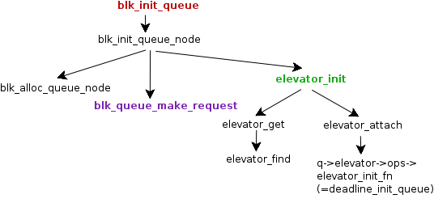
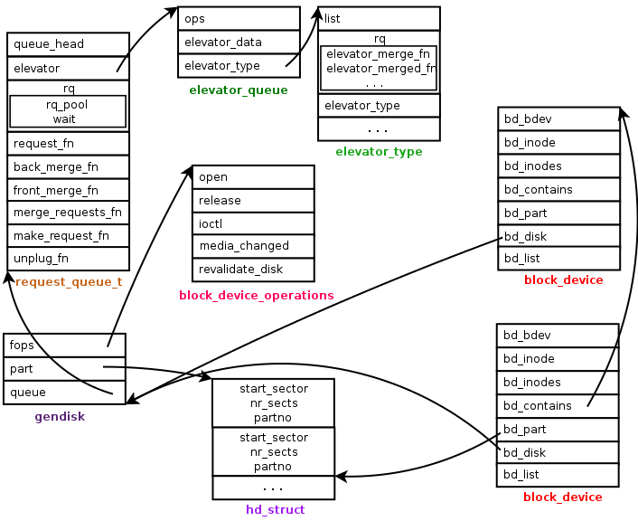
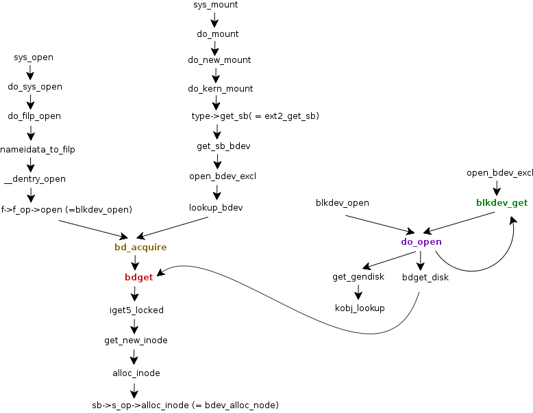
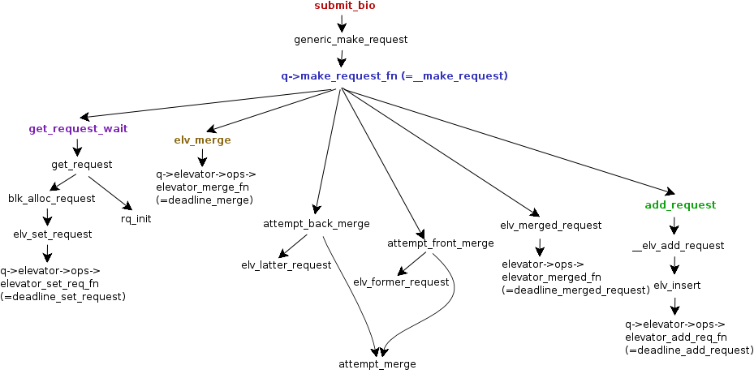
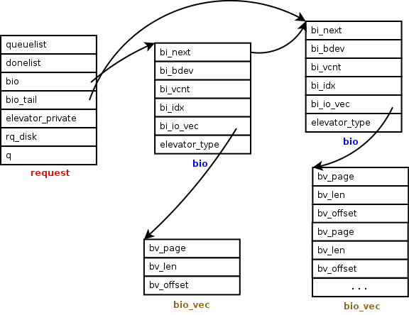
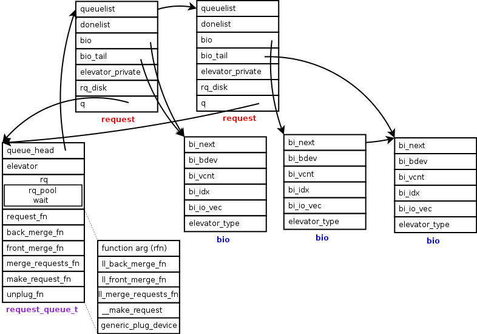
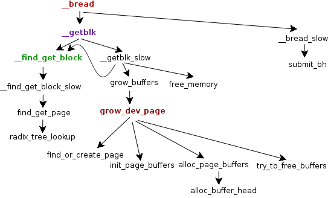
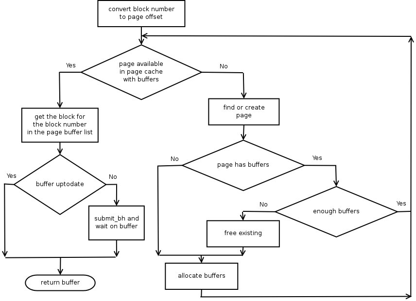

Block devices offer storage for large amounts of data (like the hard disks). They normally have moving parts and very slow to perform I/O operations. Since the I/O operations are costly, the kernel tries to extract the maximum performance by caching the data in memory. Since the actual I/O is performed by the device drivers, the kernel provides various hooks for device drivers to register their handlers.
Another requirement of the block device layer is to hide the hardware specific characteristics and provide a unified API to access the devices. For example, a file system like ext2 need not bother about the low level details of the block device.
One more characteristic of the block devices is that when multiple requests are submitted to the device, the performance depends significantly on the sequence of the requests. Since hard disks have moving parts, the performance is the maximum if all the requests are in the same direction of the head. The kernel collects the I/O requests and sorts them before calling the device driver routines to process them. It also boosts the performance by clubbing multiple requests for contiguous sectors. The algorithm that sorts the I/O requests is called as the elevator algorithm.
Block devices are accessed as special type of files, such as /dev/sda1, (with the file type as block device type). They are identified by their major and minor numbers. The device file stores these two values. The major number is used to identify the device driver and the minor number is used to identify the partition within the device. For example, the device driver for the hard disk will manage all the partitions on the disk. It can be seen that the device files for different partitions will have the same major number but will have different minor numbers.
$ file /dev/sda1 /dev/sda1: block special (8/1)
The kernel identifies the device only by the major and minor number combination. The actual file is irrelevant for the kernel. The device file can be located anywhere in the file system and there can be any number of device files. All of them refer to the same device (and partition). For example, the partitions of the hard disk are normally named as hda1, hda2 etc under /dev folder. This is just a convention. We can create a device file /tmp/hda1 with the same major and minor number as /dev/hda1. Both point to the same device and the file system on it can be mounted using any file.
The data from the block devices is accessed as blocks (defined by the structure buffer_head). For example, when a file is read from the device, the file system handler for the read operation converts the file offset into a block number and issues a request to load that particular block.
Since the actual I/O has to be performed by the device drivers, the block device layer defines various handlers to perform the actual operations. It provides registration mechanisms for the device drivers to register their handlers. Once this is done, the kernel calls the registered handler to perform the actual operation.
The kernel also makes use of the elevator algorithm to sort the I/O requests in the request queue. The kernel offers different types of elevator algorithms. There are four algorithms available now - noop, deadline, cfq and anticipatory.
gendisk
This stores the information about a disk. The important fields are queue, part and fops used to store the request queue, partition information and the block device operations table respectively. The part field points to an array of pointers to hd_structs each representing a partition.
This device driver has to allocate the gendisk structure, load the partition table, allocate the request queue and fill the other fields in the gendisk structure.
hd_struct
This stores the information about a partition on a disk.
block_device
This is used to represent a block device in the kernel. This can represent the entire disk or a particular partition. When the structure represents a partition, the bd_contains field points to the device object which contains the partition. The bd_part field points to the partition structure of the device. In the structure representing the device, the field bd_disk points to the gendisk structure of the device.
This structure is created only when the device is opened. Note that the device driver still creates the gendisk structure, allocates the request queue and registers the structures with the kernel. But till the device is actually opened (either by reading through a device file or by mounting it), this structure will not be created.
The field bd_inode points to the inode in the bdev file system. The device will be accessed as a block device type file. That inode that represents that device file is stored in the bd_inodes list.
When the device file is opened for the first time, the kernel allocates the block_device structure and fills the structures. This is actually allocated by the function bdev_alloc_inode. This is called when the inode in the bdev file system has to be allocated. This allocates the space required for both the structures in a single buffer.
This structure describes a block of data in memory. b_data points to the actual memory location where the data is present. The field b_this_page is used to list all the buffers sharing the same page i.e., the b_data points to the same page.
bio
This structure is used to represent an ongoing block I/O operation. This is the basic unit of I/O for the block layer. When a block has to be read from a device, the buffer_head structure (the represents the data in memory) allocates a bio structure, fills the structure and submits to the block layer.
bio_vec
This represents a segment of data in memory as (page, offset, length). The location in memory to which the I/O needs to be performed is represented as segments. The bio structure points to an array of such segments.
request
This is used to represent a pending I/O request. These are stored as a list to the request queue (these are sorted by the elevator algorithm). When a bio is submitted to the block layer, it tries to see if it can be added to an existing request in the request queue. Such bio structures are stored as a list and stored in bio field. The bi_next field of the bio structure is used to store the next bio in the list.request_queue
This stores information about the pending requests and other information required to manage the request queue like the elevator algorithm.To support a disk, the device driver has to first register with the kernel. The driver needs to allocate a gendisk for each disk and assign a request queue for each gendisk. The gendisk structure is allocated using alloc_disk by passing the number of minors (this is the number of partitions - 1, so 1 would mean no partitions). The gendisk structures are registered using add_disk function. The partition information is represented by the hd_struct and the partitions of a disk are stored as an array of hd_struct structures. alloc_disk allocates the array required for the partitions. The driver needs to fill the partition information if there are partitions.
The floppy driver
The function blk_init_queue generally is used to allocate the request queue and it calls function blk_init_queue_node to complete its job. This blk_init_queue_node function fills most of the handlers in the request queue with the default handlers provided by the kernel. it sets generic_unplug_device as the unplug handler of the queue (this handler will be called to perform the actual I/O on the device).
This blk_init_queue_node function then calls the function blk_queue_make_request. It initializes the unplug_work structure with (blk_unplug_work, q) and the unplug_timer with (blk_unplug_timeout, q). The timeout handler will be called when the timer expires. The timer handler adds the unplug work structure to the block work queue. This work queue is allocated by the block device layer initialization function blk_dev_init. Function blk_dev_init is called by genhd_device_init once.
blk_init_queue also assigns the chosen elevator algorithm (it can be chosen at the boot time) by calling elevator_init. elevator_init gets the elevator type identified by the name and calls elevator_attach to attach the elevator to the queue. This calls the elevator_init_fn which allows the elevator algorithm to initialize its data structures for the request queue.
The following diagram shows the call graph for blk_init_queue.

struct block_deviceThe following diagram shows the relationship between various data structures related to block devices.

A device can be read/written as a normal file. For example, file system utilities access device files as regular files and write file system meta data. The kernel accesses these devices when a file system on the device is mounted.
File systems call init_special_inode function for special type files like device files. This function sets the file operations of the inode to def_blk_fops. When the inode is opened, the kernel calls the open handler in this file operations table. The handler registered in the def_blk_fops is blkdev_open.

When the kernel opens the device during mount, the function get_sb_bdev, which reads the file system superblock from the device. The details of both the code paths can be seen in the call graph. Both the paths finally call bd_acquire. The inode is allocated from the special block device file system. The inode allocation function registered with this file system, bdev_alloc_inode, actually allocates the structure bdev_inode which has space for the block_device and an inode. Though the pointer to the inode field is returned by the inode allocation function, iget5_locked, we know that there is a block_device structure before the inode structure (this can be accessed by manipulating the inode pointer). The function bdget initializes this block device structure and the new inode structure.
Note that the gendisk and the partition information is not yet assigned to the block device structure. This is done by the function do_open. This function handles the case of opening the device file of a partition. The funciton get_gendisk fills the number of partitions in the disk. If the device is opened for the first time and there are partitions, it calls bdget_disk to get the block device structure for the whole disk and calls blkdev_get to open the disk. The open handler of the block device operations table is called when the block device structure of the whole disk is opened.
The following code snippet shows the important lines of code in the bd_open function that setup the device structures for partitions. The bd_contains field is set for the partition device to point to the structure of the whole disk. Also, the bd_part is set to the corresponding entry in the hd_struct array for the partition.
The block device is initialized now. Data can be read/written by allocating bio structures and populating it (the bi_bdev field pointing to the block device structure) and then calling submit_bio.
Requests for I/O are submitted using the submit_bio function. The bio structure is allocated using bio_alloc by passing the number of segments so that the bio_vec array is allocated for the requested segments. For example, the function submit_bh which is used to submit a request for a block allocates and fills a bio structure and submits using submit_bio.
The function __make_request does the job of adding the bio to the request queue. It makes use of the elevator algorithm to see if an existing request is enlarged or if a new request has to be created. If the bio can be added to an existing request, it tries to see if the adjacent requests can be merged again with the help of the elevator algorithm.
The following diagram shows the call graph for request submission:

The following diagram shows the relationship between the request and bio data structures.

The function __make_request first calls elv_merge to see if the bio structure can be merged into an existing request structure. The return value contains the merge information. If it cannot be merged, the bio has to be added to the request queue by creating a new request.
It tries to allocate a new request structure. If it is not able to allocate a structure, it will wait till it can allocate a structure. elv_set_request is called so that the elevator algorithm can add its information to the request (stored in the elevator_private field of the request structure).
If the elevator algorithm determines that the bio structure can be merged into an existing request, it indicates by the return value of ELEVATOR_BACK_MERGE or ELEVATOR_FRONT_MERGE. It returns a pointer to a request to which the bio structure has to be added. The return value indicates where to add the bio in the request (back merge indicates that the bio should be added at the end of bio structures in the request).
Before merging, it calls the back_merge_fn or the front_merge_fn field of the request queue (which in general are ll_back_merge_fn and ll_front_merge_fn). These functions can check whether the back/front merge can be performed on the request. The default functions verify if the constraints like the maximum sectors in the request will be violated after the request. The elevator algorithm only tells if the request can be enlarged. It doesnt know about the device driver constraints on requests. So, these callbacks allow the drivers to control the merge operation.
The following diagram shows the relationship between the request queue and the requests with one of the requests enlarged with a bio structure.

Note that till now we have only talked about adding the requests to the request queue. These actual I/O is performed by a concept of 'device plugging' and 'unplugging'. When there are requests in the request queue, the device is 'plugged' using the function blk_plug_device. This starts an unplug timer with a delay as specified in the unplug_delay field of the request queue.The requests are handled when the device is unplugged. The function called to unplug the device is generic_unplug_device or __generic_unplug_device. The device can be unplugged if the unplug timer expires or if there is a scarcity of request structures on the queue, of it I/O has to be forced on the device (like sending special commands to the device).
The function __generic_unplug_device deletes any timers, marks the device as unplugged and calls the request_fn handler of the request queue. The handler is supposed to process all the requests in the request queue.
Each opened inode has an associated address space object which stores the mapping information like the loaded pages etc. It has an associated address space operation table with handlers to perform operations on the address space like readpage, writepage etc.
When the file is mapped into memory the internal data structures (vm_area_struct) are updated to specify that the mapped memory area is a valid one. With demand paging, the read is triggered only when there is a page fault. The write handlers of the address space will trigger a write operation to the device.
When the device file is opened for the first time, the function bdget sets the a_ops field of the inode->i_data to def_blk_aops. The i_mapping field of the special inode points to this i_data field in the inode itself. This value from the special device inode is copied into the i_mapping field of the inode for the device file (with which the device is opened). So, if the device file is opened with n inodes (for example, if we create /dev/hda1, /tmp/hda1, /tmp/hdA1 all having the same major and minor numbers and open all the files) the i_mapping fields of all the inodes will share the same mapping with the special device inode i.e., all point to the i_data field of the special device inode.
The handler for readpage is blkdev_readpage. This calls block_read_full_page to which checks whether the page has associated buffers required and if they are uptodate. If not, it calls submit_bh for all the buffers that are not uptodate.
Read and write system calls delegate the task to the handlers in the file operation table. The file operation table for the block devices is generally set to def_blk_fops (set by the function init_special_inode which is called by all file systems). The read and write handlers in this table are generic_file_read and generic_file_write.
The function generic_file_read looks up for the pages in the page cache and if it is not present, calls the readpage handler of the address space object. So, this actually calls the blkdev_readpage handler.
The function generic_file_write uses the prepare_write and commit_write handler of the address space operations table to write the data to the buffer. The corresponding handlers in the def_blk_fops table are generic_prepare_write and generic_commit_write. The function generic_commit_write marks the buffers as dirty as well as adding the inode to the dirty inodes of the superblock (so that the files can be flushed before unmounting).
__bread is used to read a block from a device. This first checks if the buffer is available in the cache. Instead of maintaining a separate buffer cache, the kernel makes use of the page cache. The pages of data loaded from a file (inode) are cached and are accessed using its address space object. The offset of the page is used to locate the page in the cache.
To check if the block is available in the page cache, the block number is converted into the page number with in the inode i.e., the index of the page which will contain the required block is computed. For example, if the block size is 1k and page size is 4k and the request is to read block number 11, the corresponding page is 3 (with 4 blocks per page, 11th block falls in the 3rd page). If there is a page for the page index and there is a buffer_head for the required block number, it is returned.
If it is not able to find the buffer head (even if it finds a valid page), it tries to find or create a page and allocate buffer structures to it. Finally it would have found or created a page with buffer structures. if the buffer is not valid, it submits the buffer for I/O using submit_bh.
The following diagram shows the call graph for __bread.
The following diagram shows the flow chart of the logic of reading a buffer through the cache.
